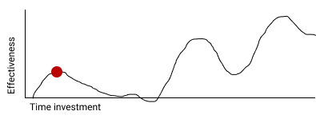
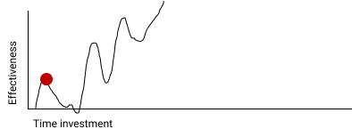

ReasonML. In Production. How types and tooling help and hinder your junior devs
Yuki Li @yukims19
Sean Grove @sgrove
Work on onegraphio
Yuki: A junior engineer, fresh out of university
- Graduated UCSD in July, 2018
- Cognitive Science, with a specialization in HCI
- Two previous internships
- PayGarden: Clojure engineer, building web services
- GeneralForensics: Python, web-scraping
- Full-time programmer, including hobbies and side projects for ~8 months
- First project in Reason ~4 months ago
Typescript & ReasonMl
Typescript
- maintained by Microsoft
- provides static typing, classes and interfaces on top of JS.
ReasonML
- created by FB based on Ocaml.
- provides static typing (but in a way that is more strict than Typescript)
Both compiles to Javascript, so you can easily collaborate with your existing JS code base.
x's narrative, as old as time
Where X could be: #{ReasonML, Elm, Haskell, Clojure, Scheme}
- First encounter: WTF?! why?!?!
- Grudging acceptance
- Over-application
- Disgruntled hermit
This is one such story
Our protagonist, Yuki.
Act 1: My idyllic village life of a junior engineer
Our hero's first serious project
Spendbot
- Read transactions from Brex (credit card for startups)
- Post transaction in Slack channel for company transparency
- Notify manager and ask for details if above some threshold

Version 1.0
- Written in pure JS: Node.js talking to Postgres on the backend
- React.js + Apollo on the frontend
- Workers + Redis-based queue (kue.js)
- Hosted on Heroku
Ship to a customer
… the customer pays us!
…
Act 2: Tragedy, in which our hero's village is burned to the ground
"Production": an unforgiving land
Long story short:
- Bugs
- Async values (promises)
- Bad assumptions
- Hard to refactor
(in a badass voice)
In JavaScript, there is no safety except the safety we guarantee ourselves
I shipped bugs to production.
Customers saw buggy behavior.
Senior engineers had to debug in production.
My life is over.
I have just done the worst thing in the world.
How can I recover from this mistake?
Act 3: Regroup, Recover, Rebuild (in Reason)
We have to make Spendbot "production ready."
Enter, ReasonML
Demand to use Reason for v2 was given from senior engineer.
I had no choice.
The pitch:
- You need training wheels.
- Reason is going to hurt
- You won't like it
He was right.
But struggles paied of well in the end
First moments with Reason
Step 1: Install the Reason toolchain.
- I still don't know what we did, exactly
- Spent more than half the day setting up a dev environment, including
- One (emacs) environment for the backend
- One (emacs) environment for the frontend
- They're separate for some reason.
Would not have persisted by myself, but it's just a one-time setup.
Now, my training begins.
Training stage 1: Types
First thing's first in Reason: Start defining your types.
- Lots of extra keyboarding
- Lots of initial planing
Not feeling like a master yet.
Maybe tomorrow will be better?
Training stage 2: Bindings
"Reason works with JavaScript libraries!"
- Tried to use
ant-design, one of the most popular React UI component frameworks - BS bindings?! For that!? What are BS binding?
Fine, fine. I'll learn!
(Deadline in a week…)
Training stage 3: EVERYTHING ELSE
- Reason native
- Where did
Js.*go?! - Where did
graphql_ppxgo?!
- Where did
opamswitches- opam killed my laptop?
- …GADTs ocaml-graphql-server… 😱
😱 😱 😱 😱 😱 😱 😱 😱 😱 😱 😱 😱 😱 😱 😱
Completely overwhelmed.
Don't even know how to phrase the questions I need to get answers.
Calm down. Phew….
Junior engineer needs and Reason
- Demonstrate value
- Ship product (quickly)
- Grow as a engineer
- Experiment and iterate quickly
- Learn new things quickly
- Medium/Long-term stability
- Develop transferable skills quickly

What about TypeScript?
- Easier tooling installation
- Simpler binding syntax
- Type `:any`
Don't get scared yet!
Act 4: 1 month later, the return of Yu-killa
As approach the shipping stage,
I remember the nightmare of V1 Spendbot.
Now,
I've come to appreciate the power of Reason more and more!
Exhaustive pattern matching
Discover edge cases never realized before
Nominal type checking (ex. Person -vs- Pet)
Confident on data type
- With structual typing:
Person = {
name: "John"
age: 25
weight: 130
}
-vs-
Pet = {
name: "Rover"
age: 63
kind: "dog"
}
nameandageare same substructure, but refer to different things
- Possible to pass
Petwhen I meantPerson… human years vs dog years is going to be hard to debug!
Short feedback loop
- Fix mistakes in earlier stage
- Understanding coding style
Better communication and collaboration
As project scales up
- Hardly remember everything in the project
- Nervous when someone touches my code
With Reason
- Fix broken part while editing through
- Understand function logic by inspecting data structures in-editor
Coding collaboration MUCH MUCH easier!
Junior engineer needs and Reason, revisited
#1. Demonstrate value
- Ship product quickly
- Ship product reliably
ReasonML:
- Cover edge cases
- Check data types
- Simplify the code
- Increase the readability of code
#2. Grow as a engineer
- Experiment and iterate quickly
- Learn new things quickly
- Communicating my thoughts
- Revising the code
Reason:
- Easier coding collaboration
#3. Medium/Long-term stability
- Develop transferable skills
- Language
- Way of thinking
Reason:
- Short feedback loop
Again, what about TypeScript?
- Hard to implement exahustive patter matching
- Structural Type checking
- Type `:any`
JavaScript vs TypeScript vs ReasonML
Some thoughts from my mentor, Sean
- Junior developers put tremendous pressure on themselves

- Experiencing (painful) failure is important
- … in controlled environments
- The company proved a hypothesis quickly, that's a win
- Why Reason instead of TypeScript
Over-applicationDisgruntled hermit
Mentoring: Get over first encounter

- Cajoling
- Threats
- Appeals to authority

- Reduce activation energy required
- Find intermediate wins
- Plan a (fairly) safe path
Mentoring: Prevent disgruntled hermits
- Show the painful parts with a cheerful attitude
- Demonstrate the tradeoffs of the technology yourself
- OneSQL
Closing thoughts
> Would I build a new product with Reason today without any outside pressure?
…. maybe yes?
- Disadvantage: Lack of resources
- Advantage: Easy refactoring & layering on new code with confidence and happiness
- Advantage > Disadvantage (especially in long term)
> Would I recommend other junior engineers try to write ReasonML code?
A resounding yes!
- Learn many useful concepts
- Avoid stupid bugs
- Start to notice bad habits